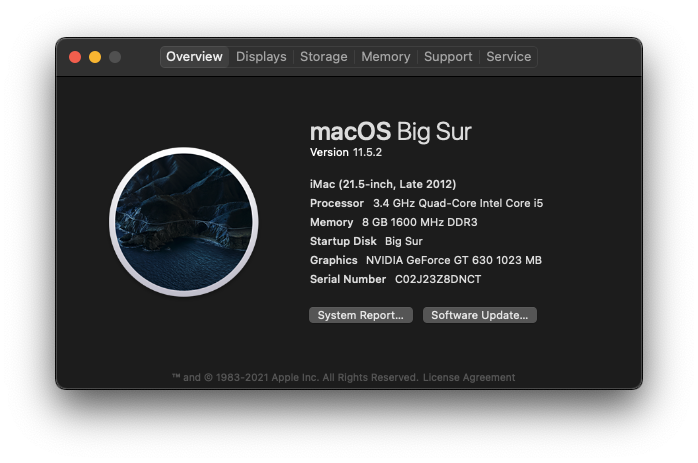

Hackintosh Log #3
September 6, 2021
Edited: September 29, 2021
Didn't expect for me to make another log so quickly, but a bit more advancements has been made to my Hackintosh.
Updating OpenCore
As I last said in the first Hackintosh log:
"I was originally going to make a OpenCore EFI Folder. But when the installer of Mojave is finished, there was no option for "macOS Installer", which is needed to actually finish the installation.
I eventually gave up with it after tinkering and tweaking the EFI Folder to no avail, and
used a premade one on
GitHub
.
"
Therefore i've always stayed with the EFI folder from GitHub. Untill i've read a PSA regarding
OpenCore 0.7.2
, the version that i've had trouble with.
"In addition, the default Secure Boot model has been changed to x86legacy (from j137 - iMacPro1,1) which restricts boot to 11.0.1 and up.
Why do you care? Well, if you're using OC with SecureBootModel set to Default, you won't be able to boot High Sierra - Catalina anymore without changing the value. And if you don't have Big Sur or above installed on the same disk, you won't even see APFS volumes in the boot picker"
After reading i've immediately started on creating an OC Configuration from scratch.. To fix the issue, I had to change SecureBootModel from Default to j137. After finishing editing config.plist,
With fingers crossed, I booted into the USB with OpenCore and hoping it will boot into Catalina.
And to my surprise, it booted! Was finally updated OpenCore to 0.7.2, including updated Kexts. After that I fixed
Power Management
with
ssdtPRGen
, since i'm using a Ivy Bridge processor.
Installing Big Sur
I decided to install Big Sur on my SSD along with Catalina. It went sucessful and without a notification on Catalina bugging me.

Unfortunately didn't screenshot me installing Big Sur, so here's About my Mac!
Only thing that was annoying was that there was a "Update" drive on Catalina, but after some reading it's important for Big Sur, so I can't do anything with it :(.
Ironing even more issues
Another issue I always had was a "EFI" entry on the Boot Picker, to whiched I want to wipe off the face of the Earth. As mentioned in Log #1:
"EFI" entry shows on Boot Picker despite there's nothing but the OC folder
But, it dissapear when I made a EFI folder from scratch, could be an issue with the one off of GitHub.
Drive icons with OpenCanopy
I've also wanted to make OpenCanopy look more nice, by using custom drive icons for each version of macOS that was shown on the picker.
After reading the OpenCore documentation, I figured out that you have to change PickerAttribute to 145 and put <flavor>.icns on the Resources folder. So, I did it. After getting the icons from
OpenCore legacy Patcher
, I finally had drive icons that show the macOS logo for each version.

My current OpenCore Boot Picker
Final words
Finally being able to fix some problems that always bugged me, and finally installing Big Sur was relieving. But that's all for this log, Log #4 will come soon... Bye!